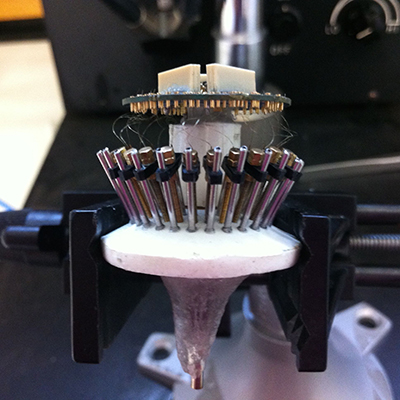

BU Directed Study
Putting hats on rats

In Brief/Approachable
I “put hats on rats”, building implants that we installed to the roof of the animal’s skull to record neural activity so the lab could study the effects of compounds on learning and memory. Involved a lot of machining the pieces and ensuring the parts worked together, like building a mechanical watch (each implant was built from scratch). I put up a sign where we built the implants that said “travailler comme l’horloger” or “work like a watchmaker”. It was finicky work, but cool to see the neural activity blip to life once we got it implanted. Ended up creating a manual for how to make the implants and mentored several high-school students in how to manufacture them. In addition to building the implants, I also helped install them, doing several implant surgeries to attach the devices to the animals.
Explained: Implant Manual
While I was working at the Laboratory of Molecular Neurobiology at Boston University School of Medicine, I spent most of my time building implants. These implants were used to record neuronal firing in rats and allowed the lab to perform experiments that explored the effects of cognitive enhancers. In short, the lab needed to get data from the brains of rats and these implants allowed that data to be acquired in real-time. Think of it like a USB port for a brain: with these implants, we could plug an animal into a computer and get data from it!
Naturally, these devices are very time-consuming to make; they are made up of dozens of parts that all need to be manufactured to high tolerances. Because of this, a lot of my time in the lab was getting these implants to work properly. I would take notes about how to make each piece and how to put them together. Soon I had amassed a large collection of notes that started to resemble a manual for how to build these implants. I talked with my manager and decided to work on combining my notes into a comprehensive implant manual specifically geared towards undergraduate researchers.
When I started out in the lab, I relied on the senior undergraduate researcher as well as my manager. There was a protocol written up by a graduate student, but it was written for researchers more experienced than I was at the time. I wanted to make something any upcoming scientist could use. My goal was to make a reference that would be approachable to any incoming undergraduate, allowing them to start building implants quickly and efficiently.
The result was a 54-page manual that covered all aspects of building the implants. It was built off of my experiences in implant manufacturing as well as working with incoming undergraduates. The act of documenting the manufacturing process helped me better understand the implants as well as give back a useful tool to the lab. It makes me proud to think that even now my manual may be helping new researchers grasp the implant manufacturing process.
Jargon-y
In my junior year of college I did a two-semester-long directed study in the Laboratory of Molecular Neurobiology within the Department of Experimental Therapeutics at Boston University’s School of Medicine. Under the supervision of Dr. Marcia H. Ratner and Dr. David H. Farb, I studied how endogenous neurosteroids like pregnenolone sulfate affect learning and memory and how they may be used as cognitive enhancers. I learned how electrophysiological methods could be used to record from the CA1 region of the hippocampus in rats and allow neural activity data to be extracted in response to effects of cognitive enhancers. I manufactured custom-made neural recording devices, performed several surgeries on the animals to attach the implants, and gained a basic understanding of how the neural activity data can be interpreted and analyzed. In addition, I used the BU Engineering Product Innovation Center to explore how the neural implants could be made more efficiently using 3D-printing technology, which resulted in adoption of a unibody core designed by Dr. Matthew Wilson at the Department of Brain and Cognitive Sciences at Massachusetts Institute of Technology and produced using stereolithography.